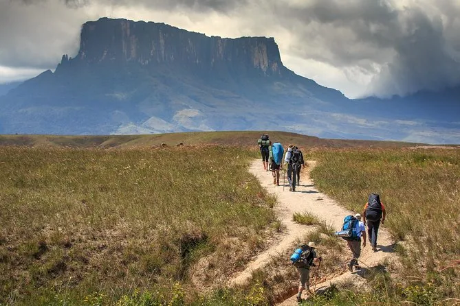
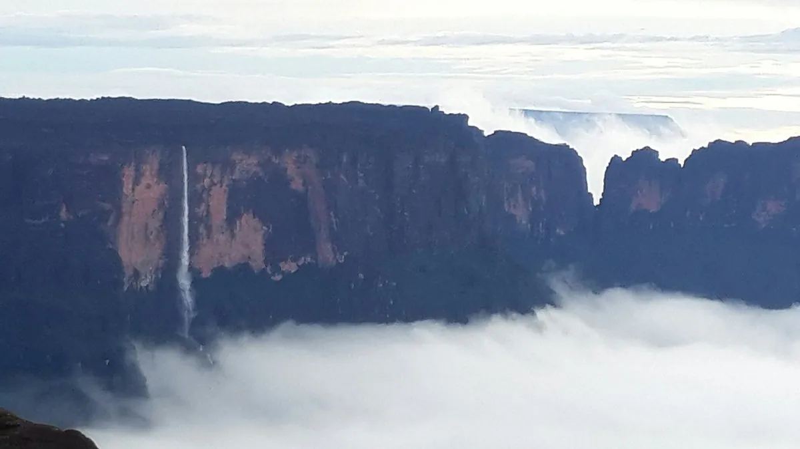
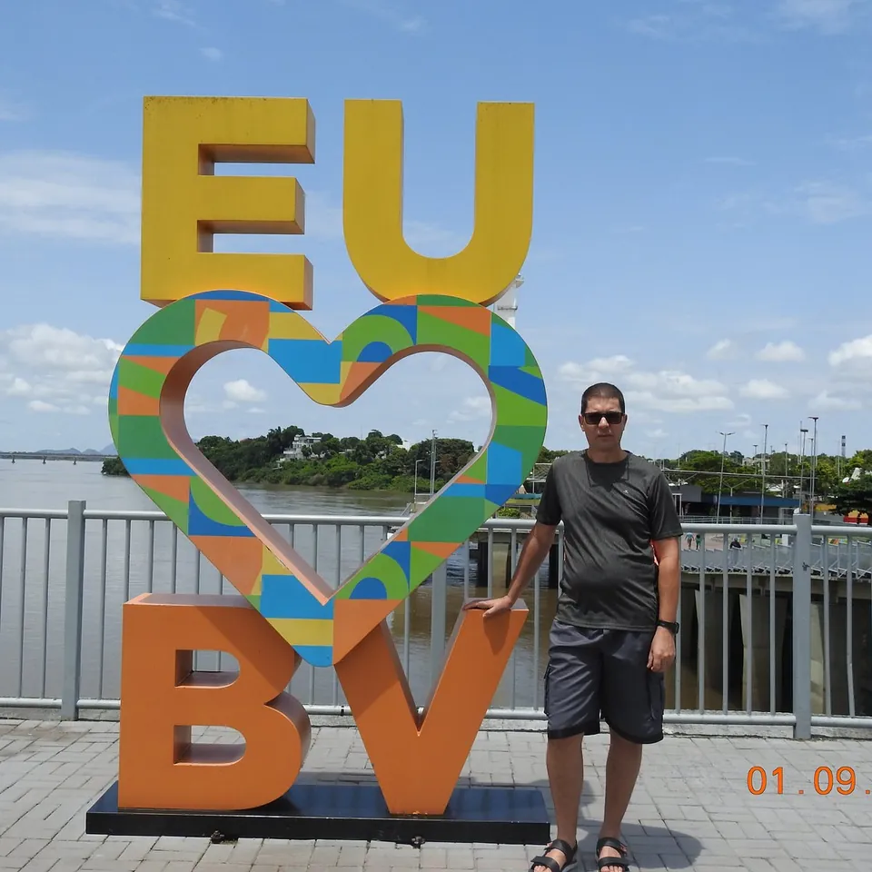
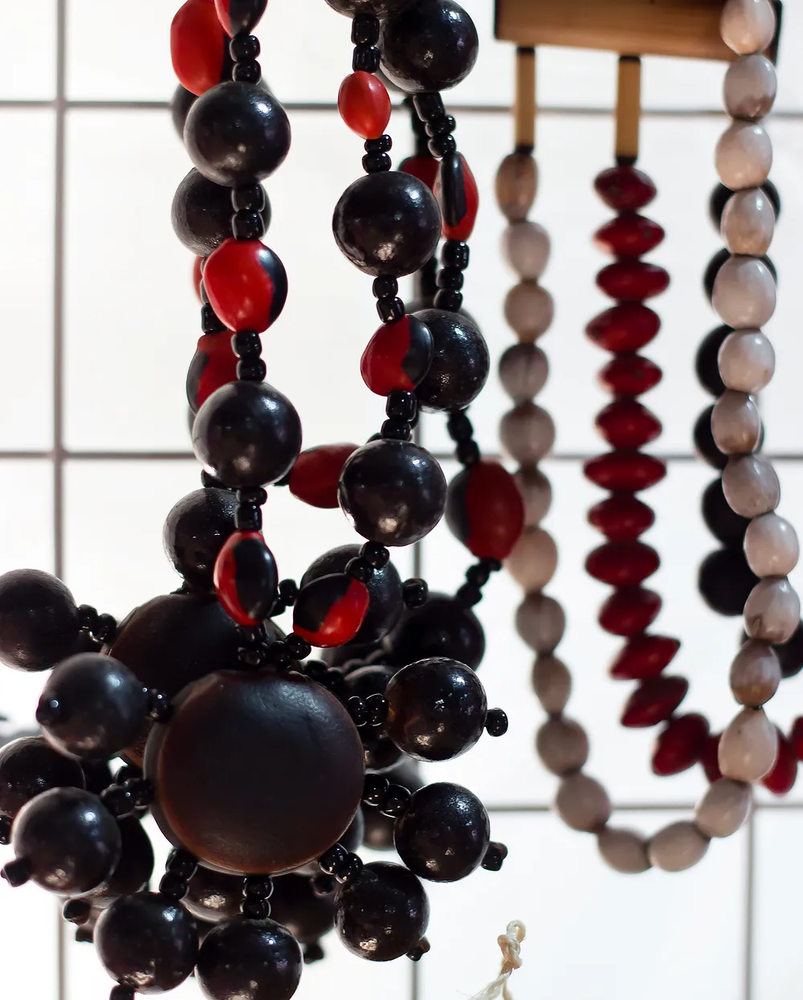
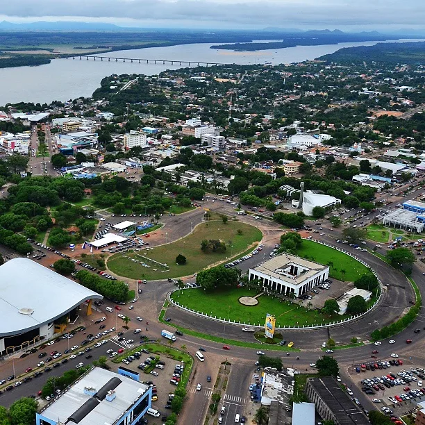

01PAISAGEM MONUMENTAL
Monte Roraima
Uma travessia entre tepuis, vales de cristais e o silêncio de uma das formações mais antigas do planeta.
Portal de Roraima
Um convite para descobrir paisagens ancestrais, histórias que atravessam fronteiras e a cultura viva do extremo norte.

PONTO MAIS ALTOMonte Roraima
PacaraimaTERRITÓRIO223 mil km²
Escolha seu caminho
Roraima se revela em camadas. Comece pela paisagem que mais combina com a sua curiosidade.

01Uma travessia entre tepuis, vales de cristais e o silêncio de uma das formações mais antigas do planeta.

02A capital planejada às margens do Rio Branco revela orlas, praças, sabores e um jeito leve de viver.

03Povos, festas, arte e culinária que fazem de Roraima um território de encontros e muitas vozes.

Um território raro
Aqui, a Amazônia encontra o lavrado, a serra encontra o céu e três fronteiras se encontram no mesmo horizonte. Roraima é pequeno no mapa, mas gigante nas possibilidades.
Formações de milhões de anos moldam trilhas e mirantes únicos.
O Rio Branco costura cidades, comunidades e modos de vida.
Brasil, Venezuela e Guiana em um território de encontros.
Culturas indígenas mantêm o território em movimento.
Cultura que permanece
Macuxi, Wapichana, Taurepang, Yanomami e tantos outros povos guardam conhecimentos que atravessam gerações. Conhecer Roraima também é aprender a escutar.
ARTE E TERRITÓRIO
Damurida, caxiri, peixes dos rios e ingredientes que só o norte explica.
Do boi-bumbá às celebrações indígenas, o calendário pulsa o ano inteiro.
Agenda cultural
Festas, celebrações e temporadas que movimentam Roraima. A lista se atualiza sozinha conforme a data de hoje.
Feiras de artesanato, rodas de conversa e apresentações celebram os povos originários que fazem de Roraima um território de muitas vozes.
19 de abril
O grande arraial da capital reúne quadrilhas, comidas típicas e shows em noites de festa ao longo de junho.
De 1 de junho a 30 de junho (data aproximada)
A capital comemora sua fundação com programação cultural, feiras e shows abertos ao público.
9 de julho
Data em que Roraima se tornou estado, com a Constituição de 1988. Eventos cívicos e culturais tomam as cidades.
5 de outubro
Na estação seca, o nível dos rios baixa e surgem praias de areia branca, perfeitas para banho, pesca e fim de tarde.
De 1 de dezembro a 31 de março (data aproximada)
Praças e avenidas da capital ganham luzes e decoração natalina, com programação para toda a família.
De 1 de dezembro a 25 de dezembro (data aproximada)
Eventos marcados como “data aproximada” mudam de ano para ano. Confirme a programação oficial antes de viajar.
Linha do tempo
A história de Roraima é feita de ocupações, deslocamentos e resistências. Uma narrativa que continua sendo escrita.
Povos indígenas ocupam e cuidam destas terras há milhares de anos.
A presença portuguesa se instala na confluência dos rios Uraricoera e Tacutu.
Roraima passa a ter uma nova organização administrativa e política.
A Constituição transforma o antigo território em um dos mais jovens estados do Brasil.
Mapa de possibilidades
| Município | Região | Distância da capital | Destaque |
|---|---|---|---|
| Alto Alegre | Oeste | ≈ 90 km | Vila do Taiano e igarapés |
| Amajari | Norte | ≈ 160 km | Serra do Tepequém e Maracá |
| Boa Vista | Capital | — | Orla Taumanan |
| Bonfim | Leste | ≈ 125 km | Fronteira com a Guiana |
| Cantá | Centro | ≈ 35 km | Trilhas da Serra Grande |
| Caracaraí | Centro-Sul | ≈ 140 km | Rio Branco e pesca esportiva |
| Caroebe | Sul | ≈ 360 km | Festa da Banana |
| Iracema | Centro-Sul | ≈ 100 km | Igarapés e pesca |
| Mucajaí | Centro | ≈ 55 km | Praias do Rio Mucajaí |
| Normandia | Norte | ≈ 185 km | Lago Caracaranã |
| Pacaraima | Norte | ≈ 215 km | Acesso ao Monte Roraima |
| Rorainópolis | Sul | ≈ 290 km | Portal da Amazônia |
| São João da Baliza | Sul | ≈ 330 km | Cachoeiras e agricultura familiar |
| São Luiz | Sul | ≈ 305 km | Rio Anauá |
| Uiramutã | Norte | ≈ 300 km | Cachoeiras e serras |
Uma primeira imersão que mistura cidade, lavrado e serra sem pressa — do jeito que o norte pede.
Boa Vista, Orla Taumanan e um fim de tarde olhando o Rio Branco.
Paisagens abertas, comunidades e o céu enorme do norte de Roraima.
Pacaraima e a porta de entrada para a experiência do Monte Roraima.
Melhor época: outubro a abril · clima de aventura
Por conta própria
Estimativas médias para duas pessoas saindo de Boa Vista, de carro próprio ou alugado: combustível, aluguel, hospedagem, guias, taxas e alimentação. Use como base para montar o seu orçamento.
O mais econômico
Orla Taumanan, centro histórico, Parque do Rio Branco e um dia de trilha na Serra Grande, no Cantá.
Média para 2 pessoas
R$ 540 por pessoa
Na Serra Grande, a entrada custa cerca de R$ 15 por pessoa e o guia da trilha da Excalibur, cerca de R$ 80.
Viu outro valor? Avise o portal sobre Boa Vista e Serra GrandeAventura acessível
Cachoeiras, mirantes e o clima fresco da serra no Amajari, a cerca de 210 km da capital.
Média para 2 pessoas
R$ 735 por pessoa
Passeios de um dia saindo da capital custam em média R$ 369 por pessoa. De carro próprio, com pernoite, sai mais em conta.
Viu outro valor? Avise o portal sobre Serra do TepequémVale cada momento
Lago Caracaranã, em Normandia, a cerca de 180 km da capital, e o céu aberto do lavrado.
Média para 2 pessoas
R$ 625 por pessoa
Visitas a comunidades indígenas precisam de autorização prévia: não é só chegar e entrar.
Viu outro valor? Avise o portal sobre Lavrado e CaracaranãExige operadora
A viagem de uma vida
O trekking acontece na Venezuela e exige guias, carregadores, permissões e acampamento. Não dá para fazer sozinho.
Média para 2 pessoas
R$ 6.535 por pessoa
Pacotes de R$ 4.200 a R$ 8.500 por pessoa. O econômico já sai de Boa Vista com guias pemón, alimentação e pernoite em Santa Elena de Uairén; o completo soma traslados 4x4 e hospedagem extra. Circuitos de 10 a 12 dias partem de R$ 7.850.
À parte: carregador pessoal (≈ R$ 1.050 no trekking todo) e equipamentos, se não tiver (R$ 500 a R$ 1.500).
Não precisa alugar carro: o transporte até a trilha já vem no pacote.
Viu outro valor? Avise o portal sobre Expedição Monte RoraimaValores médios de referência (setembro de 2026), sempre para 2 pessoas no mesmo carro. Combustível calculado com gasolina a R$ 7,56/L e consumo de 10 km/L, ida e volta. Aluguel: carro econômico retirado em Boa Vista, a cerca de R$ 150 por diária (média das locadoras do aeroporto). Com mais gente no carro, o custo por pessoa cai. Os valores mudam: confirme antes de viajar e, se encontrar um preço diferente, avise o portal.
Quem já veio
Viajantes de todo o Brasil contam o que encontraram por aqui.
Roraima em imagens
Serras, rios, cidades e encontros. Toque em uma foto para ampliar e navegar pela galeria.
Colabore com o portal
Entradas, guias, pousadas e combustível mudam de preço. Se você esteve em algum ponto turístico de Roraima, conte quanto pagou. Conferimos cada informação antes de atualizar as estimativas.
oi@conhecaroraima.com.br